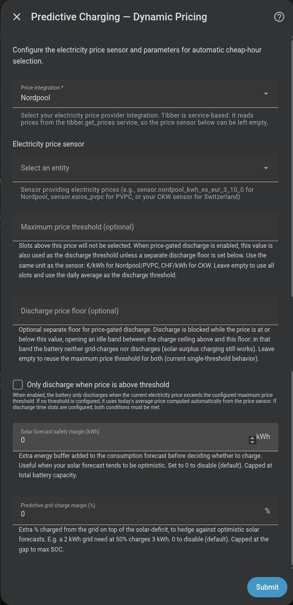

Predictive charging with future prices¶
Dynamic Pricing reads a future price calendar and buys the calculated energy deficit in the cheapest periods that can still deliver it on time. It can also protect stored energy, manage solar export, and sell selected energy during expensive periods.
Do I need it?¶
Use it if your provider publishes today’s and future interval prices and you want Omnibattery to choose when to charge.
You do not need it if your tariff has fixed repeating cheap periods; use Time Slot. If your source exposes only the price in effect now, use Real-Time Price.
Before you start¶
- Configure one supported source: Nordpool, PVPC, CKW, EPEX Spot, ENTSO-e, Zonneplan, or Tibber.
- Select the provider’s current-price entity unless you use Tibber. Tibber uses the official integration’s
tibber.get_pricesservice and needs no price sensor. - A solar forecast is optional. A remaining-energy forecast improves daytime replanning and avoids counting solar already produced. High-Price Sale set to Surplus only or above needs the configured forecast integration to provide forecasts to Home Assistant’s Energy dashboard, such as Solcast or Forecast.Solar.
- Decide whether you need an export-price source. It is optional and is used by Surplus Price Hold and High-Price Sale; leave it empty when export is credited at the import price.
How to enable it¶
- Open Settings → Devices & services → Omnibattery → Configure and choose Dynamic Pricing as the predictive charging mode.
- Select Price integration type, then choose Electricity price sensor. Leave the sensor empty for Tibber.
- Select an optional solar forecast and, if required, an export/feed-in price sensor and its integration type.
- Finish the form, then confirm Predictive Charging is on in the Omnibattery Control tab.
- Leave the optional price controls off until the basic schedule behaves as expected; enable only the policy that matches your goal.

Provider-specific sensor choice
For Zonneplan, choose Current quarter hourly electricity tariff for a quarter-hour contract or Current hourly electricity tariff for an hourly contract. The older Current electricity tariff sensor is also supported. For Nord Pool, choose either an official-integration entity or the HACS sensor; Omnibattery detects the format.
What you will see¶
Predictive Charging Active shows whether charging is needed, the selected periods, their energy quotas, and any energy shortfall. Omnibattery chooses the cheapest eligible period that occurs before each projected need, so the absolute cheapest period can be skipped when it is too late.
A visible calendar can be informational. When stored energy and expected solar already cover demand, selected_hours may still show useful cheap periods while charging_needed remains false. Reaching a grid-charge target also leaves solar-surplus charging available; it does not lock the battery out of later solar.
The plan is rebuilt when new information changes the remaining horizon: before selected periods, late in the solar day, after a material SOC drop, after a material solar-forecast revision, when tomorrow’s prices arrive, when a relevant setting changes, or when an excluded large load changes how much forecast solar remains for the battery. Press Re-evaluate Predictive Charging to rebuild it immediately.
Optional controls in the Control tab solve different problems:
| Goal | Control | Result |
|---|---|---|
| Fill available battery space when import prices are negative | Negative-price opportunistic charging | Adds qualifying negative-price periods even without a normal energy deficit |
| Keep battery energy while the current price is cheap | Price-Based Discharge | Blocks ordinary discharge until price exceeds its active threshold |
| Avoid losing solar when export is penalized | Smart Pre-discharge / Anti-curtailment | Creates battery space before forecast solar-risk periods |
| Export solar now and absorb it later when feed-in value is lower | Surplus Price Hold | Pauses surplus charging outside selected low export-price periods |
| Save stored energy for dearer household-demand periods | Discharge Reserve | Raises an economic discharge floor for future expensive demand |
| Require a worthwhile buy/sell spread | Minimum Arbitrage Margin | Rejects charge or export trades whose spread does not cover losses and the selected margin |
| Sell solar-refillable energy during a qualifying price peak | High-Price Sale → Surplus only | Exports battery energy that tomorrow’s forecast solar can replace after covering the home until sunrise |
| Also sell energy the home needs later, and buy it back | High-Price Sale → Surplus + arbitrage | Exports energy only when replacing the household demand it gives up later still saves money |
If it does not work¶
| Symptom | Likely cause | What to check |
|---|---|---|
| No schedule appears | Future prices are unavailable or the wrong provider entity was selected | price_data_status, provider integration, and price-sensor attributes |
| Cheap periods appear but no charge starts | The calendar is informational, no deficit remains, or the per-period quota is already met | charging_needed, slot_energy_targets_kwh, and battery target SOC |
| The cheapest period was skipped | It occurs after the energy deadline, exceeds the price ceiling, or fails the arbitrage margin | energy_deadlines, active price controls, and total_shortfall_kwh |
| The schedule reports a shortfall | Eligible periods cannot supply enough energy before it is needed | Price ceiling, charging power, battery capacity, phase and contracted-power limits |
| Tomorrow’s cheaper periods are missing | The provider has not published them or the active period is allowed to finish before replanning | Provider data and Re-evaluate Predictive Charging after publication |
| A price feature is enabled but inactive | Its required forecast, profile, export price, battery capacity, or grid reading is unavailable | The feature’s status binary sensor and reason attribute |
| Solar surplus exports unexpectedly | Surplus Price Hold selected a later, cheaper absorption period | Surplus Price Hold Status and its next release time |
| The battery will not discharge | Price-Based Discharge, Discharge Reserve, operating time slots, or another discharge blocker is active | Integration Status, feature status sensors, and operating time slots |
| High-Price Sale on Surplus only does not sell | Tomorrow’s solar forecast cannot refill the battery, the forecast integration does not supply Energy dashboard forecasts, or no profitable export period exists | High-Price Sale Status, its reason attribute, tomorrow’s solar forecast, and export prices |
Advanced details
Price-source normalization¶
Omnibattery supports Nordpool, PVPC, CKW, EPEX Spot, ENTSO-e, Zonneplan, and Tibber. Provider parsers normalize dated price periods into the same local schedule.
Zonneplan reads the chosen sensor’s forecast attribute, including tomorrow when available. Forecast amounts are divided by 10,000,000 into tax-inclusive major currency/kWh; the current sensor state is already major currency/kWh. Negative and zero prices are preserved. Modern entries keep explicit period boundaries; legacy entries use one-hour periods.
A Nord Pool HACS entity is read from raw_today and raw_tomorrow. If price_in_cents is true, Omnibattery converts the calendar and live price to major currency/kWh. For an official Nord Pool entity, it resolves the market area, calls nordpool.get_prices_for_date, converts currency/MWh to currency/kWh, and refreshes the cache hourly.
Tibber calls tibber.get_prices, caches today’s prices and tomorrow’s once published, and refreshes the cache hourly. The official Tibber integration must already be configured.
The planner uses local wall-clock times. During the autumn daylight saving time (DST) transition, repeated local periods cannot be represented separately; a period whose local end precedes its start is skipped. Review the schedule on clock-change days.
Daily chronological plan¶
At 00:05 local time, Omnibattery:
- Projects household consumption, solar, and usable battery energy in 15-minute intervals through the next local sunrise. Sunrise is bounded to 00:00–12:00; if it cannot be calculated, the horizon ends at midnight.
- Fetches the available price periods through that horizon.
- Detects when cumulative energy would reach minimum SOC and reserves the cheapest eligible periods that can deliver each requirement before its deadline.
- Calculates the daily average price over the available horizon.
- Gives each selected period an energy quota; only energy without an earlier deadline is optimized freely by price.
“Cheapest” means cheapest among periods that can meet the requirement in time. The projection caps stored energy at usable fleet capacity, so solar that cannot fit is not carried forward as phantom energy. A partial plan remains executable but records whether price filtering or physical period capacity caused the uncovered kWh.
Only today’s remaining solar enters the control horizon. Household demand after midnight is included through sunrise, when tomorrow’s production can begin. Solar Forecast Safety Margin is subtracted once from that forecast. New installations start at approximately 5% of configured fleet capacity; if capacity is unavailable during setup, the fallback is no margin. This is a live control rather than a setup-form field.
If prices are missing at 00:05, evaluation is retried at 15-minute offsets during the first hour, for up to four retries. If Home Assistant starts after the daily evaluation and no plan exists, it rebuilds the remaining horizon after a 15-second startup delay.
Automatic re-evaluation¶
The daily plan can be rebuilt by these events:
- Before a selected period: one hour before a future selected period, Omnibattery checks the remaining balance. It silently removes the period if energy is now sufficient or confirms it by notification when the deficit remains. Back-to-back periods are not reconsidered while the previous one is charging.
- Late-day assessment: when solar start has been detected, this runs about 1.5 hours before estimated production ends; otherwise it uses 16:00. It adds eligible future periods only for a remaining deficit of at least 0.3 kWh. This safety top-up is not rejected by the optional arbitrage-margin gate.
- SOC drop: a chronological plan rebuilds after a five-percentage-point drop from the last evaluated fleet average. A fallback non-chronological plan retains the 30-point threshold. An SOC rise does not trigger it.
- Solar forecast revision: a change of at least 1.5 kWh in either direction rebuilds the plan, with a 30-minute cooldown and a maximum of four such rebuilds per day. Measured solar since the saved reading is removed before comparison, and an unavailable sensor is not treated as a collapsed forecast.
- Excluded-device solar claim: a material change in an excluded load, such as an electric vehicle session, rebuilds the plan because that device changes how much forecast solar is available to the battery.
- Tomorrow’s prices: newly published prices rebuild the remaining horizon once per day. If a selected charge period is running, this rebuild waits until it ends.
- Relevant settings: changes to battery minimum/maximum SOC, Solar Forecast Safety Margin, or Guaranteed Minimum SOC rebuild the plan on the next control cycle.
The daily references reset at midnight. Runtime protections, manual control, backup state, time-slot permissions, battery availability, and SOC limits remain authoritative during every rebuild.
Re-evaluate Predictive Charging rebuilds the remaining Dynamic Pricing horizon immediately. It does not create a multi-day plan: an afternoon rebuild covers the remaining period through the next sunrise, while the next normal daily plan is built at 00:05.
Negative-price opportunistic charging¶
This opt-in feature independently selects hourly or quarter-hour import periods whose normalized price is below zero. It calculates the battery energy needed to reach each battery’s configured maximum SOC and takes the most negative periods first. A solar forecast is not required.
Each selected period records deficit, negative_price, or combined as its purpose. A positive-price deficit period retains the normal deficit target. In a combined period, the higher of the deficit and opportunity targets applies. Charging stops at each battery’s configured maximum SOC, and unused opportunity-only periods are removed.
During an anti-curtailment risk window, opportunity charging can use only battery space left after reserving room for expected solar:
A guaranteed-minimum-SOC requirement is the safety exception. Missing solar data makes anti-curtailment fail safe but does not cancel an otherwise valid negative import-price opportunity. Contracted power, battery limits, manual control, backup state, availability, and other safety blockers still apply.
Smart Pre-discharge / Anti-curtailment¶
This opt-in feature does not control a solar inverter. It finds periods where import price is at or below Negative Injection Threshold and forecast solar surplus exceeds household consumption. Before the first risk period, it selects the most valuable eligible periods for pre-discharge until enough battery space exists, subject to SOC floors, reserves, power limits, and blockers.
The default negative-injection threshold is 0 currency/kWh. Pre-discharge Reserve SOC adds a floor; its default is 20%, while a value of 0 uses the batteries’ existing floors. Risk periods are grouped into approximately one-hour blocks to reduce repeated switching.
Export behavior can be Self-consumption only, Automatic, or Custom limit:
- Self-consumption only allows no deliberate grid export and is equivalent to 0 W.
- Automatic exports only the power needed to create the calculated space.
- Custom limit caps deliberate grid export at the configured W value; it does not cap total battery discharge used by the home.
During a risk period, net grid target is clamped to zero so the battery can cover household consumption without deliberate export. Minimum and guaranteed-minimum SOC, operating time slots, manual control, backup state, unavailable batteries, and capacity protection still win. Missing prices, forecast, SOC, capacity, or grid data clears the override and blocker.
curtailment_status reports state, reason, next risk period, required/current space, planned discharge, shortfall, battery targets, selected periods, and active export target. Automation attributes include protected_window_active, headroom_deficit_kwh, inverter_curtailment_required, charge_limit_reason, and charge_limit_reasons. Diagnostics also expose solar_reserve_remaining_kwh, current_free_space_kwh, and opportunistic_space_available_kwh.
active_export_target_w is the battery’s target, not a universal solar-inverter command. An inverter automation must apply and later restore its own limit.
Surplus Price Hold¶
This opt-in feature decides when to absorb solar surplus under a dynamic export tariff. It estimates the battery’s remaining daily energy target, distributes expected solar and consumption across future price periods, and selects the lowest export-price periods that can absorb that target. A period with a low price but no available surplus is not selected merely because it is cheap.
Outside selected periods it adds the surplus_price_hold charge blocker. Battery charging clamps to 0 W and surplus exports, while battery discharge for self-consumption remains available.
The hold releases in a selected absorption period, after the solar deadline, once the target is met, when the remaining periods cannot cover the target, or when the best remaining saving is below Surplus Hold Minimum Saving. That control defaults to 0.02 currency/kWh. The target follows live SOC every cycle, and the plan is rebuilt every five minutes and during the normal Dynamic Pricing rebuilds.
Missing prices, forecast, usable SOC/capacity, or finite inputs releases the hold. Charge delay, an active grid-charge period, negative-price charging, anti-curtailment, weekly full charge, peak shaving, electric-vehicle pause, manual control, operating-time ownership, and a battery on its SOC floor also release it.
Export/feed-in price sensor is optional. When absent, the import curve is reused. Tibber cannot supply the export curve because its service cache belongs to the import source. A failed export sensor does not raise the import-price repair issue.
Surplus Price Hold Status reports state, reason, daily target, remaining absorption capacity, deadline, next release, selected periods and their prices, and the curve source. Integration Status reports surplus_price_hold while active.
Price-Based Discharge and separate discharge threshold¶
Price-Based Discharge checks the current price every control cycle. If the price is above its threshold, normal PD discharge is allowed; at or below the threshold, discharge is blocked and controller state is frozen.
Dynamic Pricing uses Max Price Threshold when configured; otherwise it uses the daily average calculated over the current planning horizon. If neither exists, this blocker does not act. The maximum threshold also prevents grid charging at prices above it.
Discharge Price Threshold can open an idle price band. It must be at or above the charging ceiling:
price ≥ discharge threshold → discharge allowed
charge ceiling < price < discharge threshold → neither grid charge nor discharge
price ≤ charge ceiling → discharge blocked; cheap grid charge may run
Leave the separate discharge threshold empty to use the maximum price threshold for both decisions. Solar-surplus charging remains available in the idle band. Operating time slots and price permission must both allow discharge; see operating time slots.
Discharge Reserve¶
This opt-in feature saves stored energy for more expensive household-demand periods before the next sunrise. It projects the learned 15-minute demand profile and expected solar, lets the dearest periods claim only the energy they need, and reserves claims that exceed the current price by Discharge Reserve Minimum Saving. That control defaults to 0.05 currency/kWh.
Expected solar surplus can release part of the reserve, but only when it can physically fit in the battery. Surplus that Surplus Price Hold plans to export receives no credit. The planner credits 75% of qualifying expected surplus so forecast uncertainty cannot release the full reserve before actual production arrives.
The resulting energy becomes an added fleet SOC floor. Energy above it remains available now, and the floor falls when the current period becomes expensive. The configured battery min_soc is not rewritten. Peak shaving, emergency protection, and anti-curtailment can bypass this economic blocker.
The reserve ends at the next sunrise. Missing prices, consumption profile, usable energy, or future demand leaves it at the configured minimum SOC. Manual control, anti-curtailment, peak shaving, operating-time ownership, and an explicit per-period SOC override also release it.
Discharge Reserve Status reports active state, reason, reserved energy/percentage, reference price, claims, expected solar credit, horizon demand, and horizon surplus. Integration Status reports price_reserve_hold while a battery is held.
Minimum Arbitrage Margin and round-trip efficiency¶
The optional Minimum Arbitrage Margin rejects a charge period unless the expected future discharge value covers conversion losses and the selected margin:
The margin is disabled when empty or set to 0. It applies in addition to Max Price Threshold, and the stricter ceiling wins. It gates the 00:05 trade selection; later remaining-horizon and late-day safety rebuilds can still schedule energy needed to avoid a deficit.
Round-Trip Efficiency defaults to 0.85 and represents marginal AC-to-AC energy efficiency. Lower values require a larger gross spread. It is distinct from lifetime charge/discharge totals, which include standby consumption.
The same minimum margin applies to High-Price Sale, so the charge and sell decisions use one economic risk preference.
High-Price Sale¶
One select, off by default and available only with Dynamic Pricing, sets how much stored energy may be sold into expensive export periods. Each level includes the one below it:
- Off: nothing is sold.
- Surplus only: sells energy the house will not need before sunrise and tomorrow’s solar can refill. It never makes you buy from the grid.
- Surplus + arbitrage: also sells energy the house needs later, and buys it back from the grid when that is cheaper.
Surplus + arbitrage¶
This level also sells stored energy in a qualifying expensive period only when doing so still saves money after the household demand that energy would otherwise have covered is bought from the grid. Energy without later household demand is not sold, and export never crosses a battery’s SOC floor.
When the forecast says the battery will run out before sunrise and Discharge Reserve is off, Omnibattery compares the export price with the last household-demand periods that would be bought back because of the sale. It starts with the latest period before sunrise and stops at the first sale that would not pay. For example, if the battery would last until 05:00, selling at 18:00 makes it run out a little earlier, around 04:00. What you buy back is the 04:00–05:00 demand, so the sale is compared with that price—not with the expensive 20:00 period the battery still covers.
If the battery is forecast to last until sunrise, or Discharge Reserve is on, the conservative rule remains: the export price must beat the highest later import price, plus Minimum Arbitrage Margin. The dearest qualifying export period receives energy first. Deliberate net-grid export uses the fleet’s effective discharge limit; there is no separate high-price export-cap control.
Surplus only¶
This level sells battery energy that the house will not need before tomorrow’s sunrise, but only when tomorrow’s forecast solar can refill it.
Its export budget starts with usable battery energy, then keeps enough for forecast household consumption until sunrise and the Solar Forecast Safety Margin. The cost of selling is the export income given up tomorrow while solar refills the battery—not the price originally paid to charge it. It sells only when the current export price is higher than the highest export price expected during tomorrow’s refill, adjusted for Round-Trip Efficiency and Minimum Arbitrage Margin.
With a flat feed-in tariff it never sells: selling now and refilling later would only lose energy in the battery cycle. It also stays inactive when tomorrow’s solar forecast cannot refill the battery. It uses tomorrow’s forecast from the solar forecast integration already configured in Omnibattery; no extra sensor is needed, but that integration must provide forecasts to Home Assistant’s Energy dashboard.
The plan is rebuilt every five minutes and withdrawal is checked every control cycle. Missing price coverage, an expired period, anti-curtailment, capacity protection, weekly full charge, an active grid-charge period, manual control, operating-time ownership, an invalid grid meter, or any discharge blocker stops either export policy. Lowering the select removes the dropped policy on the next control cycle.
High-Price Sale Status reports state, reason, target power, protected later demand, usable energy, allocated energy, and per-period allocations with their thresholds. Its surplus-export diagnostics include trigger_1_budget_kwh, refill_price, trigger_1_reason, surplus_export_enabled, and surplus_kwh for each period.
Diagnostic attributes¶
The predictive_charging_active binary sensor exposes:
| Attribute | Meaning |
|---|---|
charging_needed |
Whether the remaining balance requires grid charging |
selected_hours |
Selected periods and prices; can be informational when no charge is needed |
average_price |
Average price over the evaluated profile |
estimated_cost |
Estimated charging cost |
evaluation_timestamp |
Time of the last evaluation |
price_data_status |
Price source result such as ok (N slots), sensor_unavailable, no_slots, or not_evaluated |
chronological_planning_active |
Whether deadline-aware planning produced the schedule |
chronological_source / solar_timeline_source |
Household-demand and solar timing sources |
earliest_projected_depletion |
First projected minimum-SOC crossing without grid charging |
deadline_required_kwh / flexible_required_kwh |
Energy tied to deadlines and energy optimized freely by price |
deadline_shortfall_kwh / total_shortfall_kwh |
Urgent and total energy that eligible periods cannot deliver |
energy_deadlines |
Cumulative requirements and local ISO deadlines |
slot_energy_targets_kwh / slot_deadlines |
Per-period quotas and deadlines |
energy_horizon_end |
Next-sunrise boundary, or midnight when sunrise cannot be calculated |
overnight_consumption_kwh |
Forecast household demand after midnight through the boundary |
Notifications use the same planning boundary and show overnight demand separately. The dated solar timeline prefers provider periods, then a mature local solar profile, then a sinusoidal daylight curve; an invalid source falls back atomically to the next one.